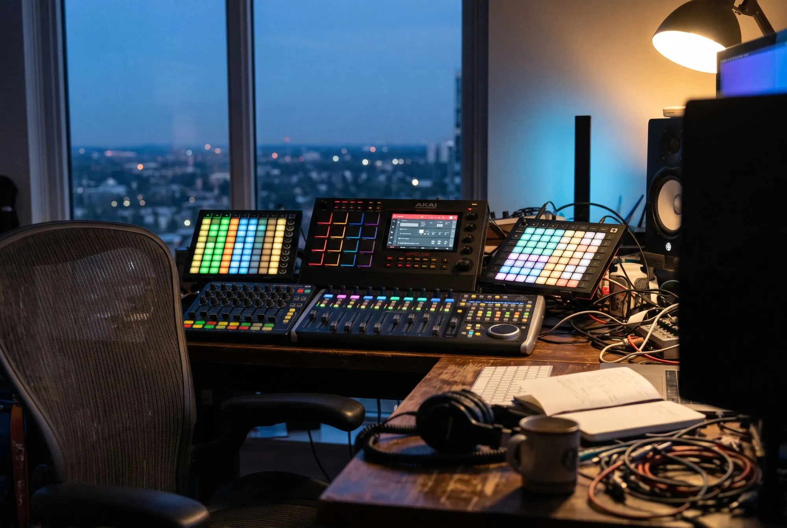
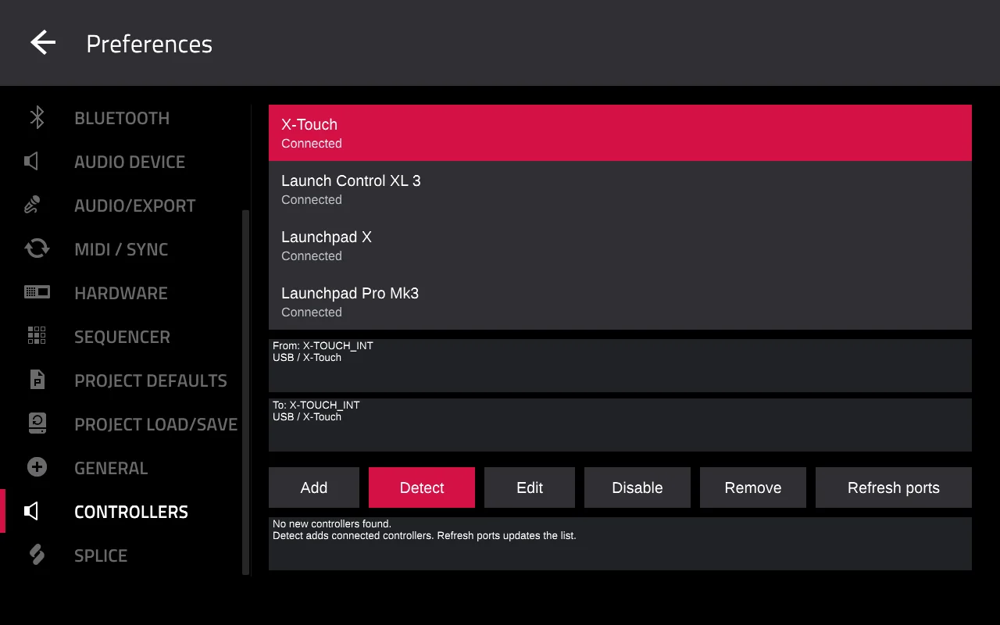
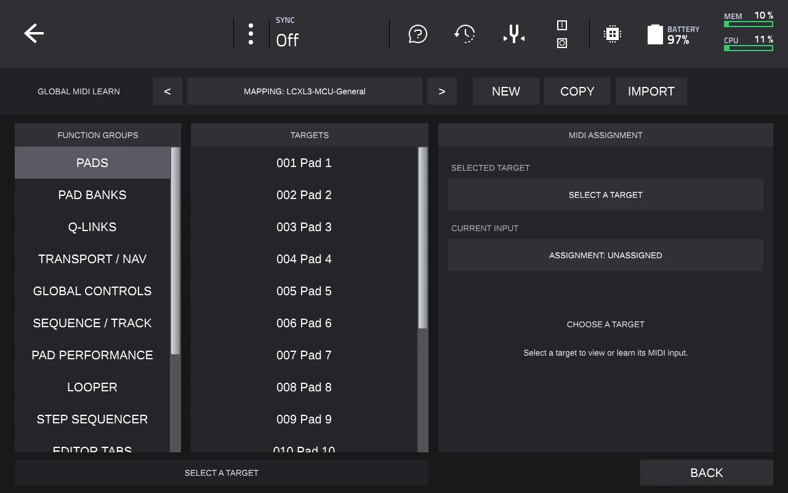
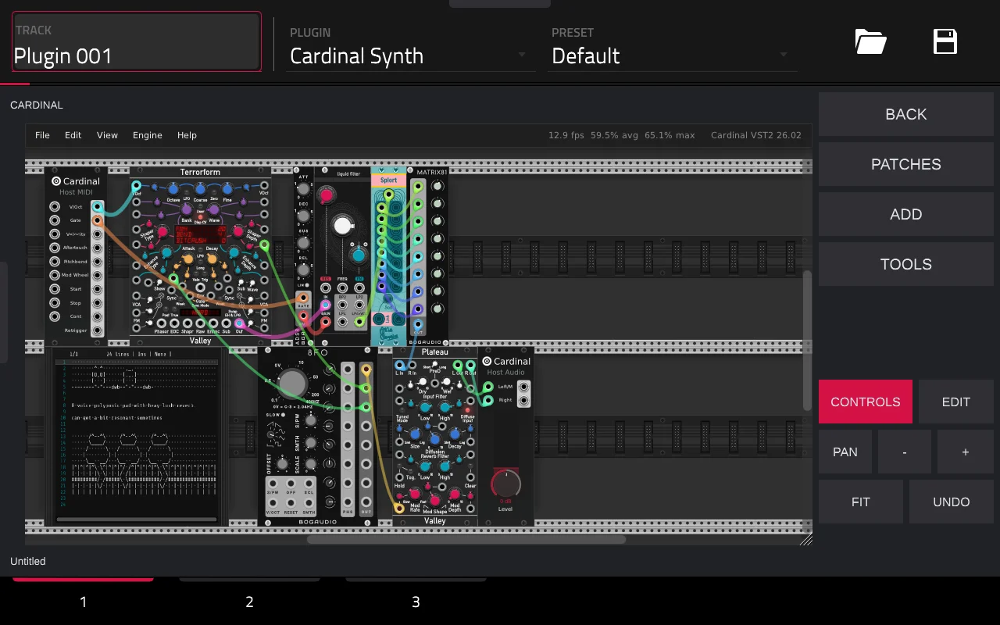

For MPC Live II v0.4.2
MPC 3 CE
Free, unofficial firmware for your MPC Live II.
Mix with faders. Launch and edit clips. Program drum patterns. Play Pd and Cardinal synths and effects.
Controllers
See the MPC and controller work together. Choose a workflow, then try the X-Touch controls or watch a short example.
X-Touch guideDownload the cheat sheet
Skip the demoThe MPC and X-Touch respond together. Try the faders, pads and Play button, or choose Watch demo.
Launch clips and scenes from a Launchpad X or Pro Mk3. Track colours and playing clips appear on both devices.
Hold Custom, choose a clip, then choose where to paste it. On Pro Mk3, hold Duplicate. See every press in the guide
Program drums while the MPC plays. This example shows 16 steps for each of four sounds; you can also use 64 steps for one sound.
Adjust track volume and pan with the Launch Control XL3. Hold Shift and press a drum track’s lower button to mix its pads.
Illustrative demos, not a live connection to an MPC.
Edit clips from your Launchpad
Copy, delete and double clips without reaching for the touchscreen. Copy whole rows, undo an edit, or turn the playing clips into a new row.
On the MPC
Real screens from an MPC Live II running CE.



Mouse editing
Plug a USB mouse into the MPC. Click a note or drag a box to select several notes. The mouse wheel works like the MPC data wheel.
Drag across a few notes to select them.
Note selection
In the Grid, hold Shift and turn the data wheel to select the next or previous note. On the X-Touch, Shift and the jog wheel do the same with Scrub off.
Tap Shift, then turn the wheel.
X-Touch Mini
Control volume, pan, Q-Links, sends and inserts. Select, mute, solo or arm tracks with the top buttons; use the bottom row for transport.
- Six knob modes
- Volume, Pan, Q-Links 1-8, Q-Links 9-16, Sends and Inserts. Rings follow changes on the MPC. Screen Q-Links follow the current page's row or column order.
- Eight track buttons
- Select, mute, solo or arm tracks in every knob mode. Hold B and press Rewind or Forward to move through track banks.
- Two quick menus
- Tap A to cycle knob modes or B to cycle track-button modes. Hold either to choose directly. Undo, Redo and transport stay on the bottom row.
Setup
Detect, on the MPC’s Controllers page, adds every controller it recognises.
- Set the controller's mode, then connect it by USB. Launchpads and the XL3 switch modes automatically.
- In Preferences > MIDI/Sync, turn Track, Global and Control off for its input.
- Open Preferences > CONTROLLERS and press Detect.
| Controller | Mode | MPC input |
|---|---|---|
| X-Touch | MC over USB | X-TOUCH_INT |
| X-Touch Mini | MC, hold MC while connecting | X-TOUCH MINI MIDI 1 |
| Launchpad X | Automatic | LPX MIDI In |
| Launchpad Pro Mk3 | Automatic | LPProMK3 MIDI |
| Launch Control XL3 | Automatic | LCXL3 1 DAW In |
Other control surfaces (MCU or HUI) and Akai controllers: press Add and choose a profile. See the controller guide.
Build and install
Make a CE image from Akai’s official update, then install it from a USB drive.
CE v0.4.2 fixes repeated Cardinal Q-Link edits and Screen knob order. Build it from MPC 3.10; the 3.9.1 update still builds v0.3.0. Release notes
- MPC Live II on firmware 3.10 or 3.9.1
- Other Gen1 MPCs are untested. Gen2 and Force are not supported.
- Controllers
- Use an X-Touch, X-Touch Mini, Launchpad X, Launchpad Pro Mk3 or Launch Control XL3. See the guide for modes, routing and other profiles.
- Without a controller
- The USB mouse and Shift+wheel note selection work on their own.
Build it in your browser
Open the image builder and choose Akai's official
MPC-3.10.0-Gen1-update.img(or the 3.9.1 update). The image is made on your computer. Nothing is uploaded.Copy it to a USB drive
Put the saved image at the top of the drive, on its own, named exactly as the builder shows.
Update the MPC
Back up your projects, connect the power adapter and run USB Drive Update from Preferences > Info > Update. Your settings and projects are kept.
After installing v0.4.2, Preferences > Info shows MPC 3 CE 0.4.2. The builder has the full install steps.
- Launchpad guideLaunch, record and edit clips. Each button press illustrated.
- Mini guideKnob modes, held menus and a printable button reference.
- X-Touch guideEvery button, view and combination. Prints to PDF.
- Cheat sheetThe X-Touch mappings as a plain text file.
- Release notesWhat changed in each version.
- Source codeEverything is open, on GitHub.
- Report a bugTell us what isn’t working.
Known limits
- Online Update replaces CE with stock MPC. To return, build the image again from the same Akai update and install it by USB.
- Cardinal MIDI and Terrorform play up to four voices. Demanding patches can still overload audio; avoid the Waves example.
- Launchpad drum steps use a fixed colour palette, not MPC pad colours.
- The XL3 pad mixer covers volume, pan, Solo and Mute.
- Akai profiles need a saved program on the controller. Some MCU/HUI workflows are untested.
- Mouse editing has no right-click or long-press gestures yet.
- Tested on MPC Live II. Controller reconnects during playback and long sessions have limited testing.